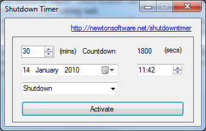

Overview
Shutdown Timer is an easy to use utility than allows you to schedule a shutdown, reboot or logoff. These actions can be carried out at any scheduled time in the future, from 1 minute to 1+ years.
This utility allows you to leave your pc on while it completes a long running task

Main Features
- Scheduling of Shutdown
- Scheduling of Reboot
- Scheduling of Logoff
- Scheduling of Logoff (force)
- Scheduling of Lock PC
- Scheduling of Standy
- Scheduling of Hibernate
- Ability to abort any of the schedules until they are executed
- Simple, clear, easy to use interface.
- Works on XP, Vista and Windows 7
|